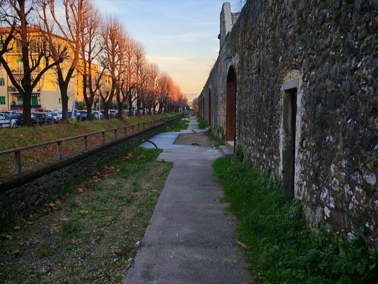
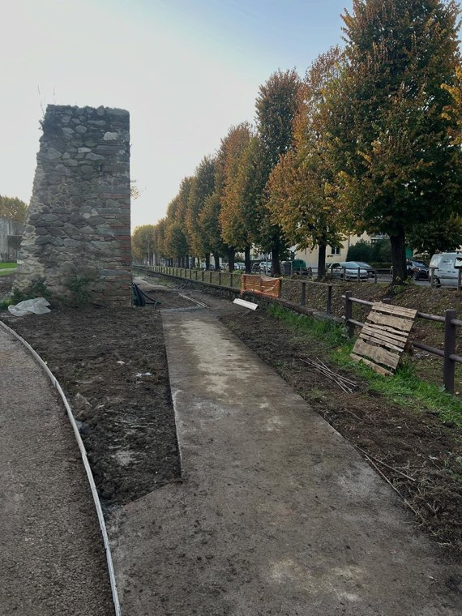
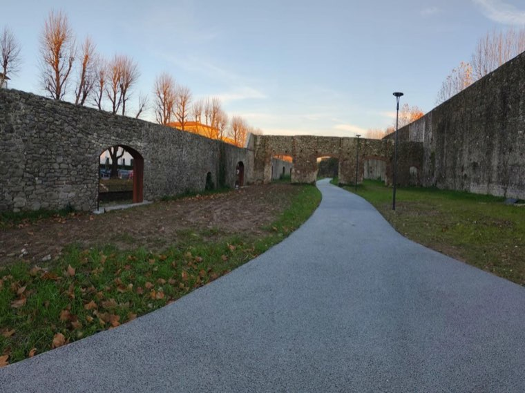
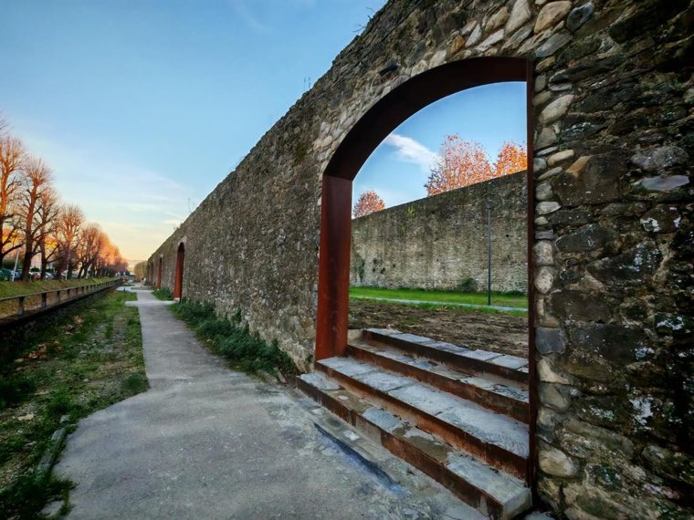

Meno ristagni e allagamenti, ricarica della falda, minor rischio di scivolamento.
Il calcestruzzo drenante è una pavimentazione che lascia passare l'acqua invece di respingerla. Riduce i ristagni d'acqua e gli allagamenti, favorisce la ricarica delle falde acquifere e aumenta la sicurezza su strade e marciapiedi, diminuendo il rischio di scivolamento. Lo utilizziamo su piste ciclopedonali, percorsi e aree pedonali, anche in ambiti storici vincolati dove il colore e la finitura vanno concordati.
Dove: Pescia, Valdinievole, Montecatini Terme, Monsummano Terme, Buggiano, Uzzano e tutta la provincia di Pistoia.




Ci mandi due foto del posto su WhatsApp: le diciamo se è fattibile e le fissiamo il sopralluogo.